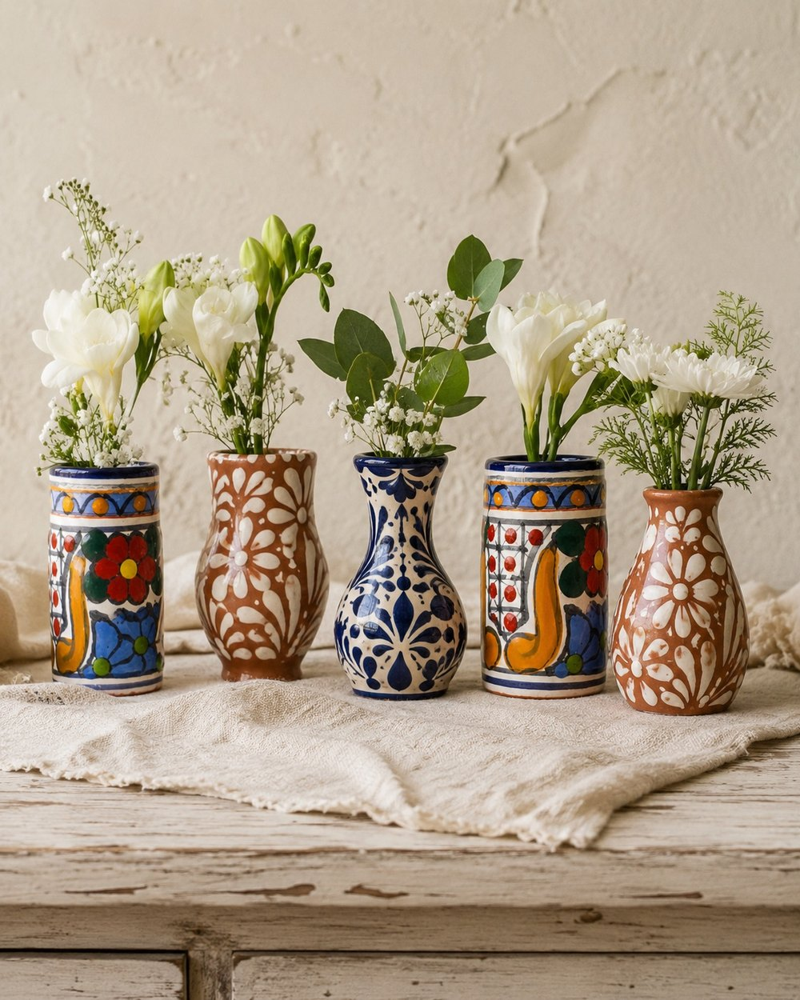
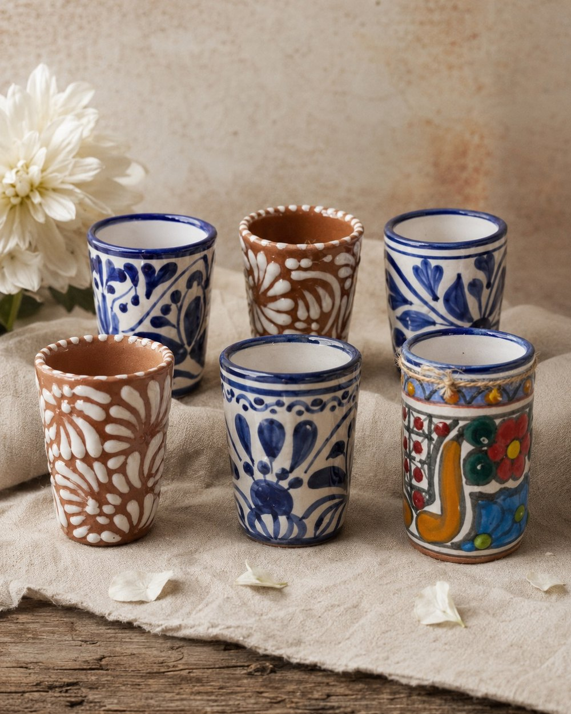
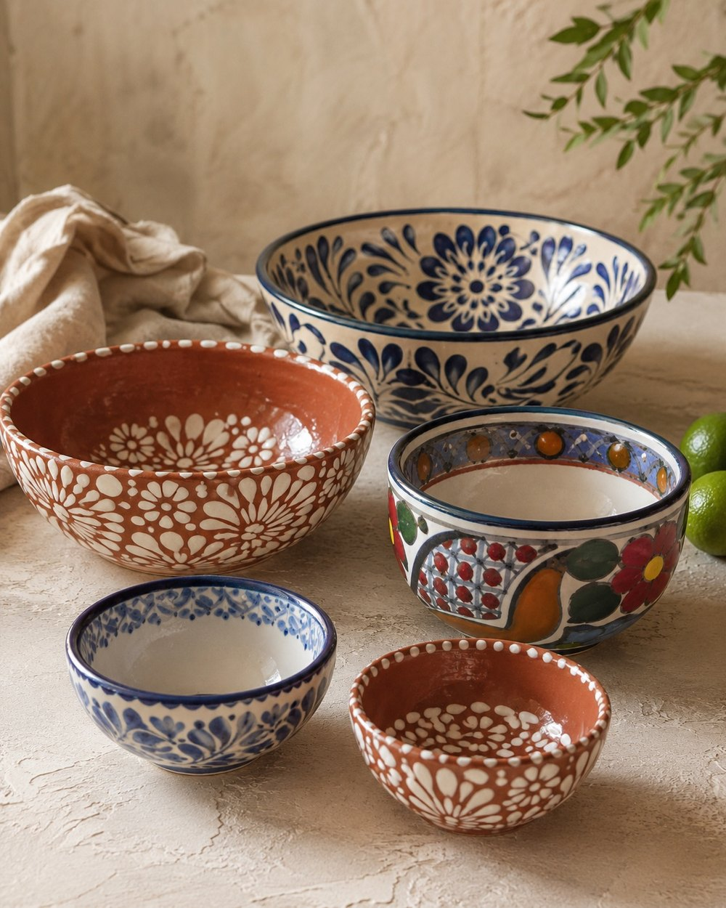

Jarras Pitchers
Thrown on the wheel and painted in cobalt or warm clay. A pour-worthy centrepiece for water, wine, or a fistful of branches.
- Material
- Glazed earthenware
- Origin
- Puebla, MX
- Size
- ≈ 22 cm
$68
Talavera pintada a mano
Hand-painted Mexican Talavera pottery
Authentic Talavera pottery from Puebla, México — thrown on the wheel and painted petal by petal by artisan families. A small, collected table of Mexican ceramics, no two pieces alike.
Explore the collection01 — Oficio
Glaze, fire, and a steady hand. We buy in small batches, direct from the workshops, so the colour stays true and the people who keep the craft alive can thrive.
Cada pieza es única — every piece is one of a kind.
Thrown on the wheel and painted in cobalt or warm clay. A pour-worthy centrepiece for water, wine, or a fistful of branches.

Small vessels for a single stem or a gathered handful of wildflowers — each a little painted world of its own.

Catch-alls for rings, salt, olives, or a stray earring. Each a tiny hand-painted medallion — the easiest way to begin a collection.

Stout little cups for mezcal, agua fresca, or the morning café. Sold as a pair — the cobalt and the clay, side by side.

Serving and prep bowls that nest neatly together. Mix the bold blue florals with the creamy clay relief — too lovely to put away.
03 — From the workshops of Puebla
Because it is painted freehand, yours will carry the small, lovely irregularities of a human hand — not a flaw, but the signature.
Talavera is a hand-painted, tin-glazed earthenware — a Mexican majolica made in and around Puebla, México since the 16th century, when Spanish potters brought the technique and local artisans made it their own. Its milky-white glaze and deep cobalt-blue florals are unmistakable, and every piece is thrown, glazed, and painted entirely by hand.
Authentic Talavera de Puebla is protected by a Mexican Denominación de Origen (1997): only workshops in the districts of Puebla, Atlixco, Cholula and Tecali, plus San Pablo del Monte in Tlaxcala, using the region's natural clays, may call their work Talavera. In 2019 the craft was inscribed on UNESCO's Representative List of the Intangible Cultural Heritage of Humanity.
Para Ruth buys directly from these family workshops, in small batches. Our glazes are lead-free and food-safe, and because each piece of Mexican pottery is painted freehand, no two are ever exactly alike.
Learn more: UNESCO · The Met Museum · Smarthistory · Denominación de Origen